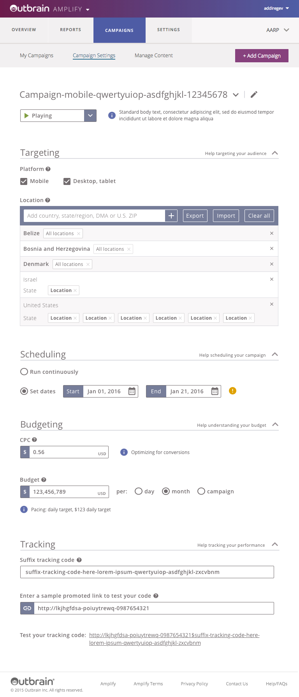
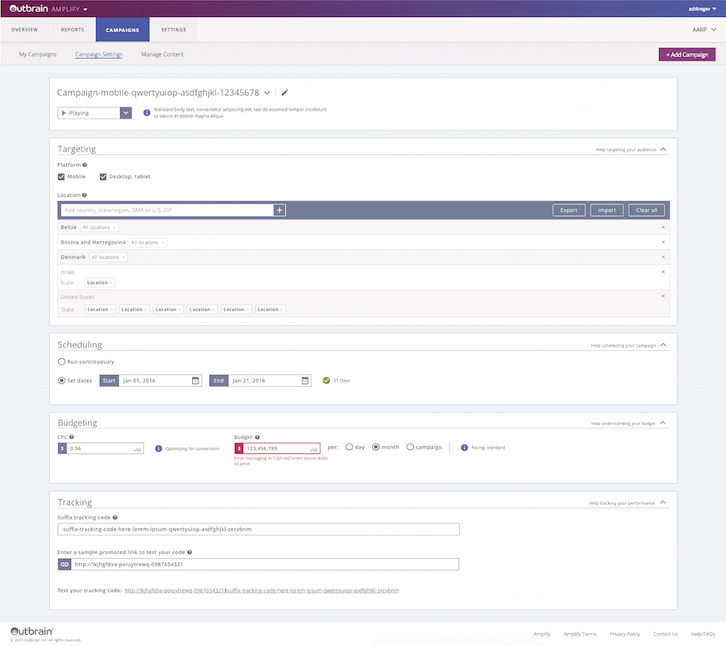
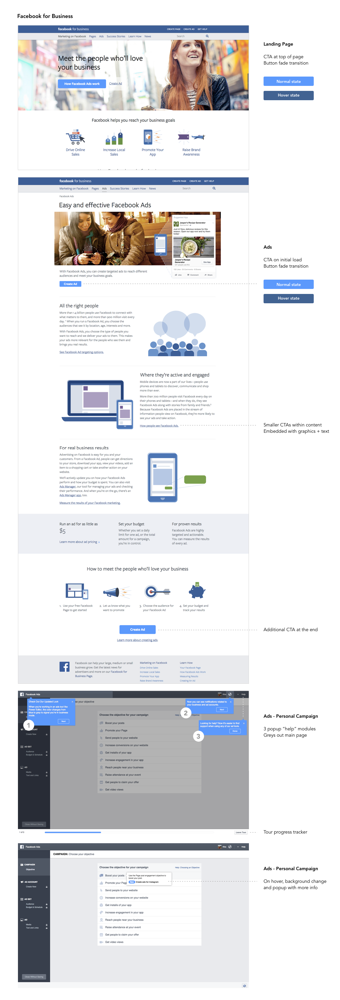
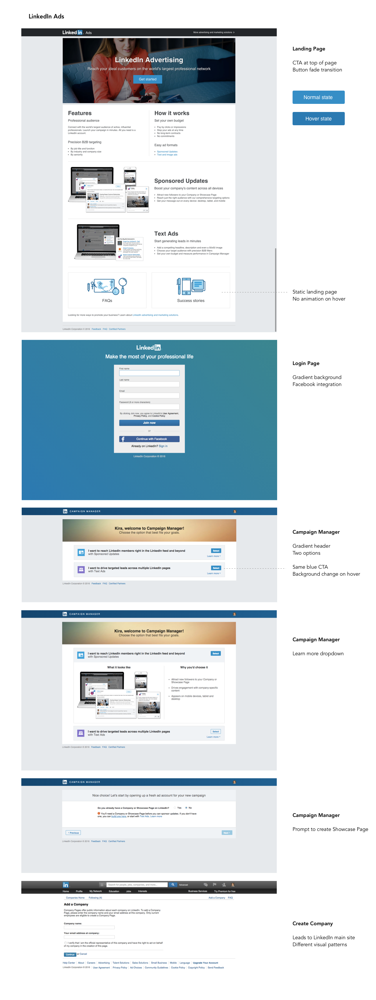

Outbrain UXD
Internship Spring 2016
Kira Prentice
See more at Github
Live Styleguide
Symmetric UI, the visual language of Outbrain, lived in a Sketch file when I got to Outbrain. With the blessing of Savitha, I began converting this design file to something that lived in the browser. With HTML and CSS, along with some Javascript/JQuery animations, the symmetric-live repository in Outbrain Github is an initial exploration of a living, breathing style guide for Outbrain product.
(Live)
(Live)
(Live)
(Live)
(Live)
Feedback Form
There was no central repository for internal feedback on Outbrain products - when a developer or PM have an issue, the communication happens over email.
This feedback tool, hosted at tam.outbrain.com/kira/ux-feedback, which posts from the form to a Google Sheet that's accessible to the team.
Amplify Pages
Mathis works on Amplify, bringing every part of the user interface up to speed with the new Symmetric style guide. He gave me the reigns to take an initial stab at some screens. I mocked up the login page and register page and implemented them at the live styleguide.
Amplify Dashboard
Another part of UX design it taking into consideration every need of a user, across device sizes. While Mathis worked on the interfaces, I dove into reformatting from a standard screen size to a large desktop or iPad view.


Blog Post
"Tales of an Outbrain Intern: What I Learned About UX" is a blog post dedicated to my time in the Outbrain internship! The goal was to educate the average person about what UX means and what its components are! This filtered through the diverse, international lens of the Outbrain team. It appears on the Outbrain blog!
CTA Research
How do Outbrain competitors implement "Call To Action" buttons on their sites? I looked into this to give our team an idea about possible updates to the Outbrain user flow. This research not only involved visuals, but also hover effects and microanimations. The end result was a document containing in-depth competitor analysis.


